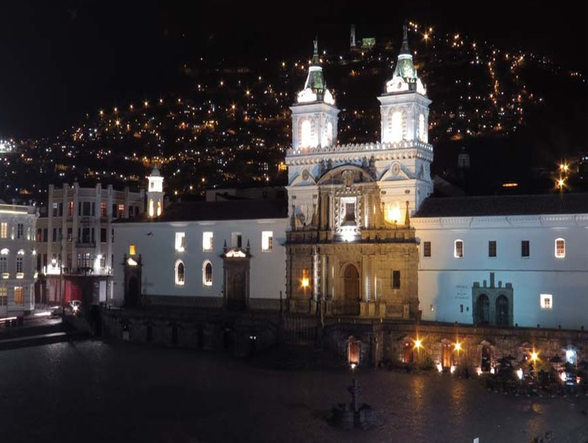
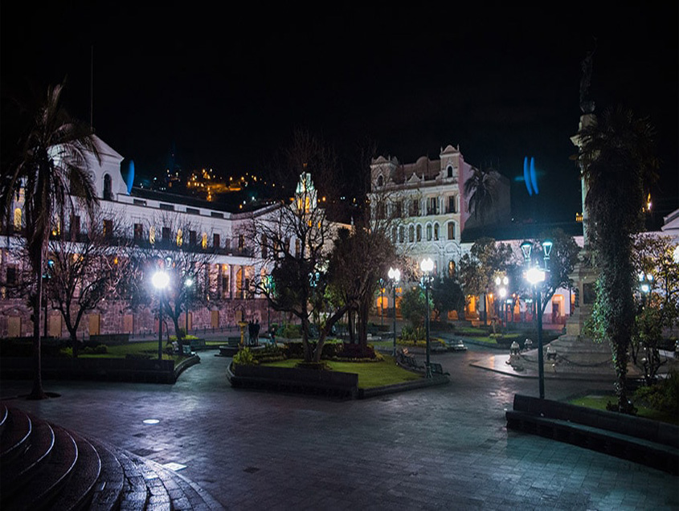
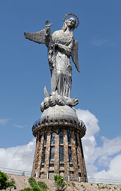
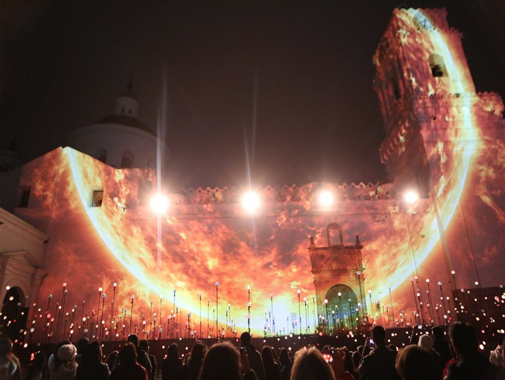
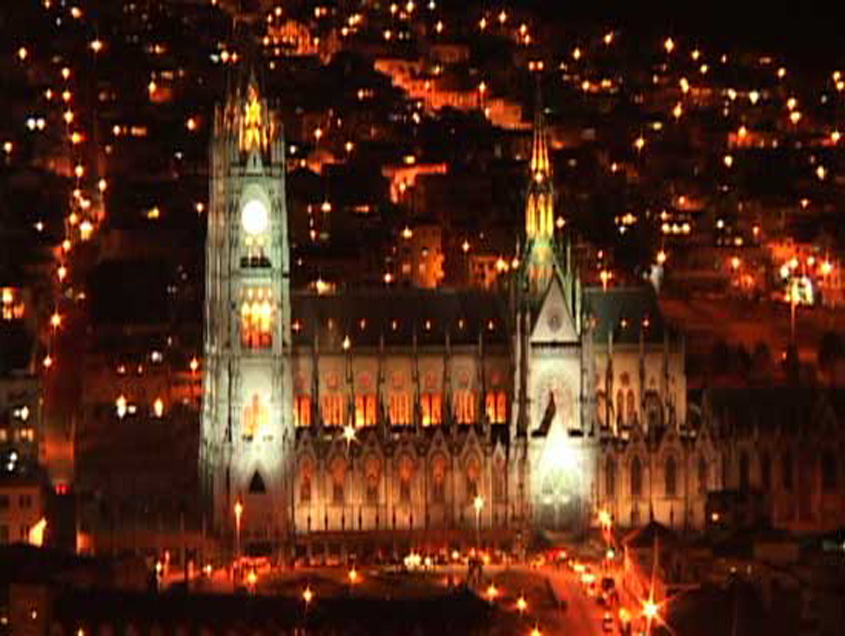

Quito (oficialmente San Francisco de Quito) es la capital política de la República de Ecuador, la más antigua de Sudamérica3 y de la Provincia de Pichincha,4 es la segunda ciudad más grande y la segunda en población, después de Guayaquil; cuenta con 1 607 734 habitantes (parroquias urbanas) y 2 239 191 habitantes en todo el Distrito Metropolitano,1 por lo que es la segunda ciudad más poblada del Ecuador. Además es la cabecera cantonal o distrital del Distrito Metropolitano de Quito5 y actualmente es considerada la capital económica del país.6 7 Está ubicada sobre la hoya de Guayllabamba, en las laderas occidentales del estratovolcán activo Pichincha, en la parte oriental de los Andes y su altitud promedio es de 2700 msnm. La ciudad está dividida en 32 parroquias urbanas,8 las cuales se subdividen en barrios. Quito es el centro político de la República
La fecha de su primera fundación es incierta; los registros más antiguos se hallan en la hacienda del Inga alrededor del año 10300 a.c. El Inca Huayna Capac convirtió a Quito en una ciudad importante del norte del Tahuantinsuyo, y durante varios lapsos de tiempo se movilizó entre esta y Tomebamba, esta última capital norteña del Imperio. Sin embargo, se utiliza la conquista española de la ciudad, el 6 de diciembre de 1534, como su nacimiento.9 La Escuela quiteña es como se ha llamado al conjunto de manifestaciones artísticas y de artistas que se desarrolló en el territorio de la Real Audiencia de Quito. La Escuela Quiteña alcanzó su época de mayor esplendor entre los siglos XVII y XVIII, llegando a adquirir gran prestigio entre las otras colonias americanas e incluso en la corte española de Madrid.10 El 24 de mayo de 1822 el ejército independista comandado por el General Antonio José de Sucre venció a las fuerzas realistas leales al rey de España quienes estaban bajo las órdenes de Melchor de Aymerich, en la denominada Batalla de Pichincha. Gracias a la victoria de las tropas grancolombinas, se consiguió la liberación de Quito y la independencia de las provincias pertenecientes a la Real Audiencia de Quito. El 13 de mayo de 1830 se crea la República del Ecuador, con Quito como capital tras separarse de la Gran Colombia. Es la primera ciudad declarada, junto a Cracovia en Polonia, como Patrimonio Cultural de la Humanidad por la Unesco, el 8 de septiembre de 1978.11 En 2008, Quito fue nombrada sede de la Unión de Naciones Suramericanas (Unasur), siendo así el centro de reuniones oficiales de los países de América del Sur.12 Quito ha sido evaluada dentro del concepto de ciudades mundiales o globales como una ciudad gamma según el estudio de GaWC.
La Ciudad Mitad del Mundo es un terreno propiedad de la prefectura de la provincia de Pichincha, Ecuador. Está situado en la parroquia de San Antonio del Distrito Metropolitano de Quito, al norte de la ciudad de Quito. La principal atracción del lugar es el monumento a la Mitad del Mundo, el cual tiene como finalidad el resaltar la ubicación exacta de la línea ecuatorial o ecuador, del cual el país toma su nombre, y destacar también la misión geodésica franco-española del siglo XVIII que ubicó el sitio aproximado por el cual pasa la línea equinoccial.1 También se encuentra el Museo Etnográfico Mitad del Mundo, un museo sobre la etnografía indígena de Ecuador. Una pequeña ciudad que rodea el monumento actúa como centro turístico, ofreciendo una réplica de una ciudad colonial española llamada "Ciudad Mitad del Mundo".
Entre 1736 y 1744, una misión geodésica francesa (dirigida por Charles Marie de la Condamine) viajó al Ecuador (en aquel entonces parte del imperio español) para resolver una discusión que existía en la Academia de Ciencias de París, sobre si el globo terráqueo tenía achatamiento en los polos o en los extremos. Esta misión hizo mediciones y cálculos astronómicos para determinar cuál era efectivamente el achatamiento de la Tierra. De ahí se deriva el Sistema Métrico Decimal, porque el Metro es la diezmillonécima parte de un cuadrante del meridiano terrestre, que fue medido por la misión de La Condamine y otros expertos que estuvieron en la expedición. Ecuador fue elegido para la medición debido a que ofrecía condiciones más estables para la realización de la misión, puesto que en África y Asia las condiciones no eran estables.2 En la misión se utilizaron diversos instrumentos, pero el problema principal se presentaba por la serie de sensibilidades que surgieron en las comunidades, las que veían extranjeros que hacían cosas extrañas. Se conoce de una anécdota en el diario de La Condamine, según la cual los científicos lograron instalar dos referencias hechas a base de ladrillo y mortero para sus mediciones astronómicas. La tercera, tenían que hacerla en una loma cerca de Quito, que se llama Cruz Loma (porque allí existía una gran cruz). Allí lograron realizar las mediciones de Caraburo, de Hoyambaro, y la tercera era la de Cruz Loma. Esta última medición les generó enormes dificultades debido a que tenían que llevar a lomo de mula los ladrillos para, luego de los cálculos astronómicos, instalar esta referencia con un pequeño trozo de metal (posiblemente bronce) que marcaba exactamente el lugar de la medición. El problema surgió cuando la preocupación de ciertas comunidades indígenas dio pie para investigar qué era lo que esas personas estaban haciendo. Esto hizo que el trozo de metal fuera destruido, y cuando ya se había construido la pirámide de Cruz Loma, se destruyeron las otras dos piezas de metal. Entonces, cuando se instalaron a hacer las mediciones y querían los referentes, ya no pudieron usarlos. La preocupación surgía por una misión que para el común mortal era extraña.2
Ryan Thomas Gosling (London, Ontario, 12 de noviembre de 1980) es un actor, director de cine, escritor y músico canadiense. Tuvo la atención del público como estrella infantil en Mickey Mouse Club de Disney Channel (desde 1993 hasta 1995) y apareció en otros programas de entretenimiento familiar incluyendo Are You Afraid of the Dark? (1995), Goosebumps (1996), Breaker High (1997-98) y Young Hercules (1998-99). Su primer papel importante en el cine fue en The believer (2001), y luego construyó una reputación por sus interpretaciones en películas independientes como Murder by numbers (2002), The Slaughter Rule (2002), The United States of Leland (2003) y Stay (2005). Tuvo atención pública en 2004 con un papel protagónico en The Notebook, por la que ganó cuatro Teen Choice Awards y un premio MTV Movie Award. Su actuación en Half Nelson (2006) estuvo nominada por un Premio a la Academia y su papel en Lars and the Real Girl (2007) estuvo nominada por el Globo de Oro. En 2007, protagonizó en la película de suspenso Fracture.